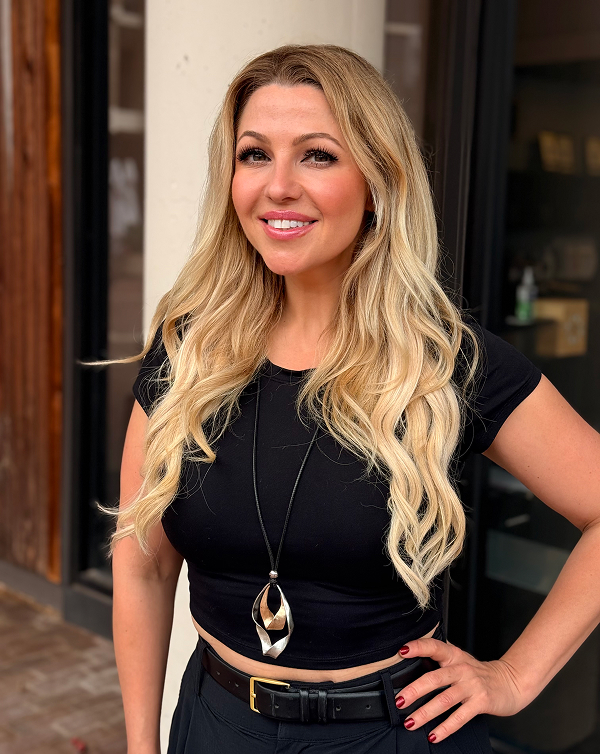
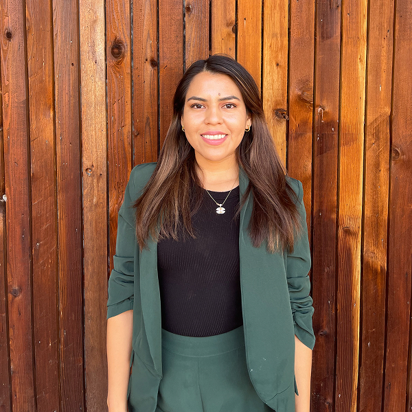

Kate Noda

Kate Noda
I’m Kate Noda — Master Stylist, Color Expert, and Owner of Top Style Salon. My love for hair and beauty started when I was a little girl, fascinated by how a touch of color or a great cut could completely transform someone’s confidence. After graduating from one of America’s top beauty schools, Paul Mitchell The School , I built my foundation behind the chair and soon found my true calling — creating personalized looks that make every guest feel radiant, empowered, and authentically themselves. In 2017, I opened my first studio salon in Tysons, and by November 2019, we proudly expanded to our current Top Style Salon by Kate Noda in Reston’s beautiful Lake Anne community. Our space reflects everything I value — warmth, artistry, teamwork, and genuine connection with our guests. As a Global Master Colorist and American Board-Certified Haircolorist, color is my specialty and my passion. Whether it’s precise , long-lasting grey coverage, soft grey blending, or multi-dimensional techniques like balayage, highlights, or AirTouch, I believe color should always enhance natural beauty and complement each client’s skin tone, lifestyle, and personality. Equally, I take pride in crafting cuts that flatter face shape and texture, creating looks that are modern, wearable, and built to last. I work with focus and speed — but never compromise on quality or the personal touch that defines my craft. I believe every guest who walks through our doors should feel at home, appreciated, and beautiful in their own unique way. At Top Style, our work goes beyond hair — it’s about connection, care, and the joy of helping you feel truly seen. ✨
Ana

Ana
I’m a stylist at Top Style Salon by Kate Noda, where I’ve had the pleasure of working alongside Kate and our talented team for the past few years. With over three years of experience in the beauty industry, I’ve dedicated my career to mastering the art of cutting, coloring, and styling — and I’m continually inspired by how a great hair transformation can boost someone’s confidence. I specialize in women’s haircuts and color, with a focus on balayage, lived-in color, and dimensional blondes. Staying current with the latest trends and techniques allows me to create modern, personalized looks that reflect each client’s unique style. Outside the salon, I’m passionate about travel, adventure, and discovering life’s little joys. I can’t wait to welcome you into my chair and help you look — and feel — your absolute best! ✨